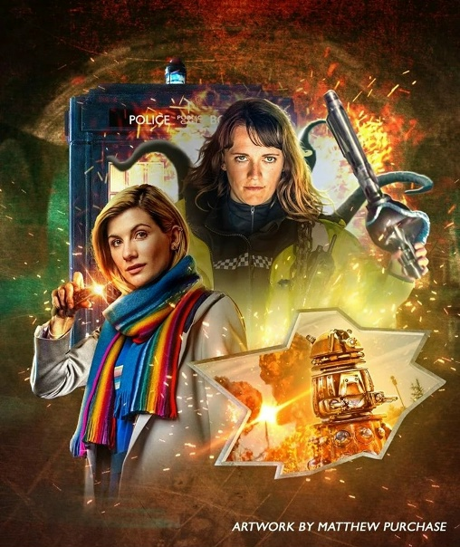
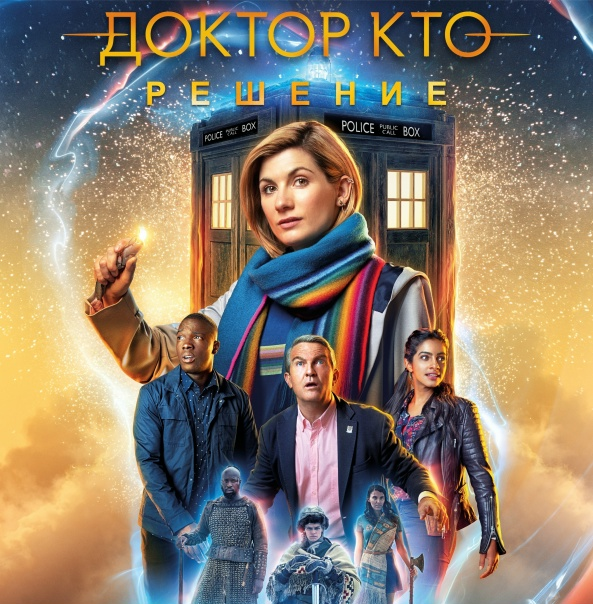

чаще всего это 11-я серия одиннадцатого сезона
Resolution
новогодний спецвыпуск
1 января 2019
Формат: 60-минутный эпизод
| Варианты озвучек: | * Разные: смотрите по инструкции чаще всего это 11-я серия одиннадцатого сезона |
|---|---|
| Скачивание и просмотр: |
Самое опасное и ужасающее существо во вселенной поджидает Доктора и её друзей на археологических раскопках Шеффилда…

